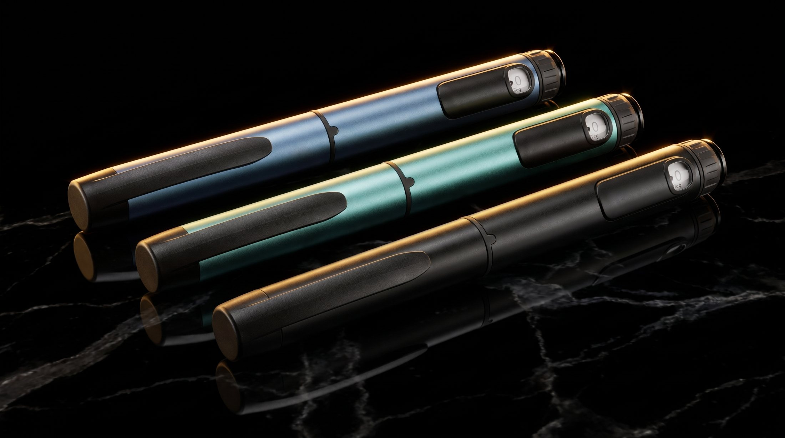
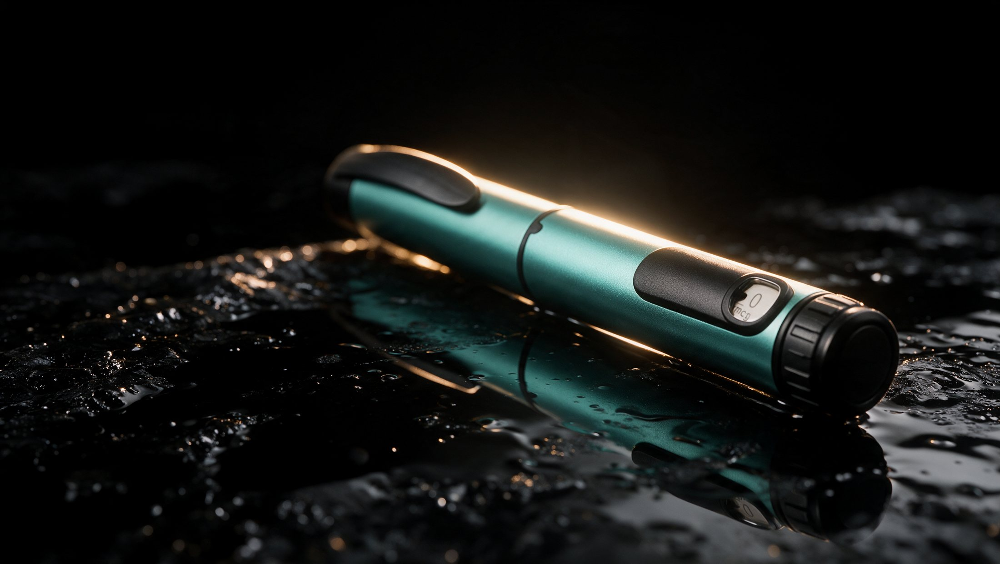

No other supplier in this channel offers a metal reusable and a plastic disposable on the same mechanism. Same needle, same dosing, no retraining.
Plastic reads as disposable. A weighted metal body reads as equipment, and patients treat it accordingly. Five finishes in production: allocate one per protocol and the commonest at-home error — the wrong device — disappears.
A pen that feels like equipment is kept, charged with a fresh cartridge and reordered. A pen that feels like packaging is thrown away with the box.
Accredited third-party laboratory, ISO 11608-1:2022 and ISO 11608-2:2022. Tolerance interval at k = 3.154.
| Target volume | Units | Measured average | Std deviation | Required range | Result |
|---|---|---|---|---|---|
| 0.01 mL | 20 | 0.0113 mL | 0.0020 mL | 0.000 – 0.020 | Pass |
| 0.30 mL | 20 | 0.2979 mL | 0.0026 mL | 0.285 – 0.315 | Pass |
| 0.60 mL | 20 | 0.5973 mL | 0.0042 mL | 0.570 – 0.630 | Pass |
Full 56-page report under NDA. Report number and laboratory identity are released to verified physician accounts on request.
Under electron microscopy, a needle that did nothing but pass through a vial stopper showed 5.46% tip deformation. On inspection, the injectors saw none.
A pen needle never meets a stopper.
Akintilo et al., Journal of Cosmetic Dermatology, 2025 — SEM of 45 needle tips. Coring incidence from 150 stopper punctures, 18–21G, rising to 56% at 18G and 45°. Illustrations schematic.
Stability talk in this channel is all thermal. Light is treated as a labelling formality. Residues absorbing near-UV — tryptophan, tyrosine, phenylalanine, cysteine — oxidise directly, cascading into methionine and histidine.
And it cannot be modelled. Thermal decay follows Arrhenius. Photostability has no accepted predictive equivalent, and damage can occur within hours.
Exposure accrues in lux-hours, so storage governs it — not the seconds of an injection. A reconstituted vial is clear glass on a shelf for weeks. A capped pen keeps its cartridge dark for its whole life.
Photo-oxidation pathways per Kerwin & Remmele and subsequent forced-degradation literature. Exposure conditions per ICH Q1B.
Quality management system certification for medical devices, held by the device manufacturer. Scope covers the development and manufacture of pen injectors and disposable sterile injection needles.
Certified as a Class I device with measuring function, assessed under Annex IX. Coverage extends to cartridge syringes and pen injectors.
A premarket notification has been submitted and is under review. No clearance determination has been issued, and none is claimed or implied by this site.
Most competing supply in this channel carries no device certification at all. The full certification package is released on NDA.
Samples of the metal and the disposable device are available to verified physician accounts, filled or unfilled.